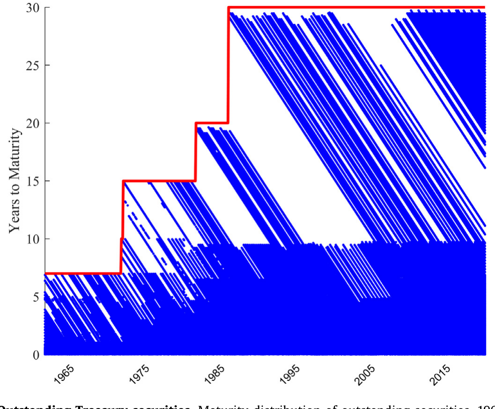
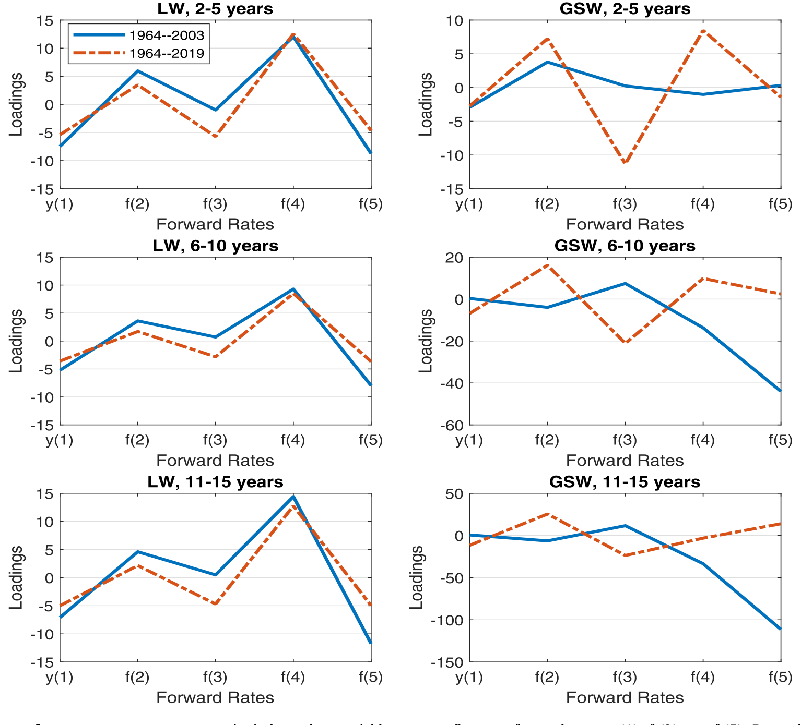
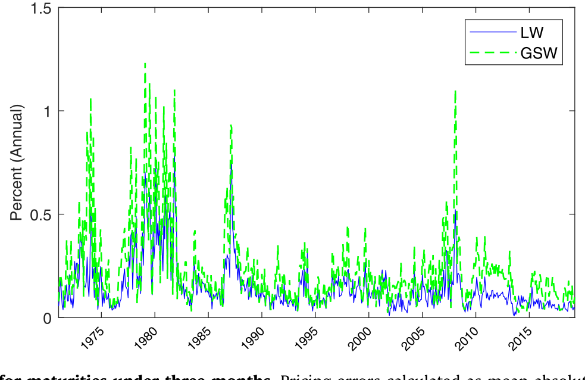
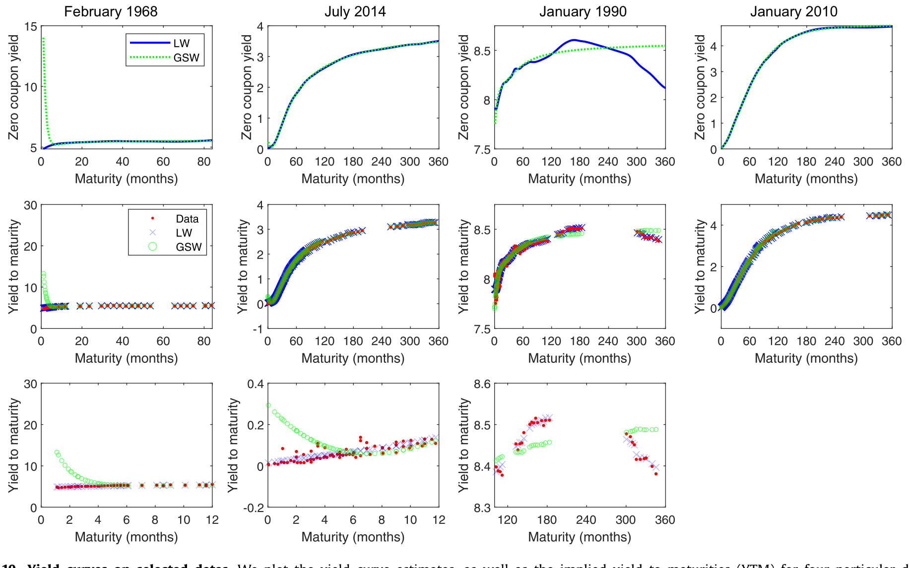
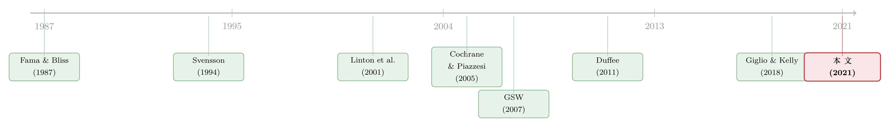

你以为下载的是「收益率曲线」，其实下载的是一种方法
本文读的是 Liu & Wu (2021, Journal of Financial Economics)：作者用一种带「自适应带宽」的非参数核平滑方法，重新构造了一条美债零息收益率曲线。它在短端把定价误差从 GSW 的 7% 压到 0.2%；更要紧的是，换上这条曲线后，Cochrane–Piazzesi (2005) 的债券收益预测和 Giglio–Kelly (2018) 的超额波动率，结论都变了——前者的「帐篷形」载荷变稳健了，后者长债的方差比从 1.62 抬到 2.37。一句话：你喂给模型的那条曲线，本身就是结论的一部分。
1 一个被当成「事实」的数据集
做宏观和资产定价的人，几乎没有谁没用过「恒定期限的零息美债收益率」。它是研究利率期限结构、估计收益预测回归、刻画期限溢价、分析货币政策、给衍生品定价的起点。我们打开 CRSP，或者去 Gürkaynak、Sack、Swanson (2007)（下称 GSW）那个网页上下一份 csv，然后理直气壮地把它当成「市场利率」塞进回归里——仿佛它是一个从天上掉下来的、客观的事实。
但它不是。
零息收益率从来不是直接观测到的。我们能观测到的，是一堆带息的国债、票据、长债的成交价：期限七零八落、票息各不相同、短端密、长端稀。要从这堆原始价格里「反推」出一条光滑的、每个期限都有取值的零息曲线，必须做某种插值与平滑——也就是说，必须选一个方法。而一旦选了方法，方法的脾气就会渗进数据里。
这就是本文的张力所在：最常用的两份曲线数据，各自的方法都有看不见的代价。Fama & Bliss (1987) 只有 1–5 年、且只有月频；由于本身不光滑，想把它外推到更密或更长的期限很成问题——Joslin et al. (2014) 把它延到 1–120 个月，Cochrane (2015) 却指出这份延伸数据带着很大的特异测量误差。GSW 呢？它沿用 Nelson & Siegel (1987) 经 Svensson (1994) 扩展的参数函数，把所有期限的曲线锁进同一个低维函数形式里。代价有三：第一，它剔除了所有剩余期限不足三个月的标的和全部国库券，于是短端是外推出来的，定价误差很大；第二，参数法把拟合重心放在中期，长端也靠外推；第三，自由度太小，容易漏掉局部信息——而那些局部信息，可能恰恰是经济上有意义的。
一个常被忽略的细节：短端不准，不只是短端的事。一只 1.5 年期债券有两笔票息（0.5 年和 1 年）。如果一年以内的折现率有误差，这两笔票息都被定错价，于是 1.5 年的折现率也跟着错；1.5 年错了，2 年又跟着错……误差就这样顺着票息链条往长端传染。
2 真正的主角不是曲线，而是「该多局部」
那么，怎么造一条更好的曲线？作者的答案，建立在 Linton et al. (2001) 开创的非参数核平滑 (non-parametric kernel-smoothing) 框架上。非参数法的好处一句话能说清：它不要求曲线在所有期限上长成同一个函数形式。典型地，收益率曲线的短端局部花样多，长端则平滑得多——参数法很难同时照顾这两头，只能折中；而非参数法天然允许「这一段贴得紧、那一段贴得松」。
先看怎么把一份带息债券的价格，跟零息曲线联系起来。给定一只债券，它有观测价格 \(p\)、一串现金流 \(\{c_j\}_{j=1}^{J}\)、以及对应的现金流到期时点 \(\{\nu_j\}_{j=1}^{J}\)。若已知零息收益率 \(y(\nu_j)\)，则模型隐含价格是
$$\hat p = \sum_{j=1}^{J} c_j \exp\!\big(-y(\nu_j)\,\nu_j\big).$$
问题在于：零息曲线 \(y(n)\) 定义在我们想要的「恒定期限网格」\(n\in N=\{1,2,\dots,360\}\) 个月上，而现金流时点 \(\nu_j\) 既不一定落在网格上、也凑不齐整条曲线。于是不能简单地把上式反解出 \(y(\nu_j)\)。作者的办法是用一阶泰勒展开，把任意 \(\nu_j\) 处的收益率，用网格上某个邻近点 \(n_j\) 的取值和它的一阶导来近似：
$$y(\nu_j) \approx y(n_j) + (\nu_j - n_j)\, y'(n_j).$$
接着，一个自然的问题是：\(n_j\) 该取网格上哪一点？答案是——都取，但按距离加权。\(n_j\) 离 \(\nu_j\) 越近，第 \(j\) 笔现金流对 \(y(n_j)\) 提供的信息越多。作者用一个正态核 (normal kernel) 来实现这种「就近加权」：
$$K(n_j,\nu_j) = \frac{1}{\sqrt{2\pi}\,h(\nu_j)} \exp\!\left(-\frac{(n_j-\nu_j)^2}{2\,h(\nu_j)^2}\right).$$
这里的 \(h(\nu_j)\) 就是带宽 (bandwidth)，也即正态分布的标准差。选正态核有两个理由：一是不同核的拟合表现差别不大，但正态核解析上更好处理（Wand and Jones, 1994）；二是它处处连续可导，使得作者能把一阶条件解析地推出来，这对于估计一条 360 维的曲线在计算上至关重要（box 核、Epanechnikov 核在边界不可导，做不到这点）。
于是单只债券的核加权平方定价误差是
$$E = \int\!\cdots\!\int \big(p - \hat p(n_1,n_2,\dots,n_J)\big)^2 \prod_{j=1}^{J} K(n_j,\nu_j)\, dn_j.$$
把所有债券的误差加总、并用久期 (duration) 的倒数平方加权，就得到了要最小化的目标函数。这是全文方法的核心方程，值得拆开看：
为什么要用久期加权？因为同样 1 美元的定价误差，对一只短期国库券和一只 10 年期长债的含义完全不同——前者要严重得多。用 \(1/D_i^2\) 加权（\(D_i = \sum_{j=1}^{J}\nu_j c_j \exp(-\nu_j \bar y)\)，其中 \(\bar y\) 是该券的到期收益率），相当于在收益率空间里做等权，于是模型会更用力地去拟合短端——而短端又恰恰影响着所有期限债券的票息折现。这个加权方案在参数法里早有人用（Nelson & Siegel, 1987；GSW），但在非参数框架里是新的。
但真正关键的一步，还不在核、也不在加权，而在带宽怎么选。带宽是非参数方法的命门：太小，曲线过度贴合局部、变得不光滑；太大，所有期限被一视同仁地抹平，曲线过于光滑、丢掉局部信息。作者的创新，是提出一套自适应带宽 (adaptive bandwidth)——让带宽反比于某个期限附近观测到的债券数量：
- 数据多的期限段（典型是短端），带宽小，信息「就近」汇集；
- 数据稀的期限段（典型是 10 年以上、发行间断），带宽大，信息「就远」汇集。
具体做法是：对每个对应现金流的 \(\nu\)，选 \(h(\nu)\) 使得大约有 \(N_0\) 只债券落在 \(\nu\) 两侧各两个带宽的区间内（主分析里 \(N_0=8\)，这个取值由表 C.3 的样本外预测结果决定）。由于观测点既不等距、又对 \(\nu\) 不对称，作者分别定义左、右带宽，例如左侧：
$$h_l(\nu) = \tfrac{1}{2}\min b \quad \text{s.t.}\quad N\big([\nu-b,\,\nu)\big) \ge N_0/2,$$
右侧 \(h_r(\nu)\) 对称地定义，最后取两者的对称组合作为 \(\nu\) 处的带宽，并人为设定下限三个月、上限 120 个月（10 年）。分别算左右带宽很重要，因为某一天存量美债的期限分布常常有缺口，左右是不对称的。
这套带宽设计，本身就是对美债期限结构「形状」的一次量身定制。下面这张图说明了为什么需要它：存量美债的期限分布极不均匀——短端密集、长端稀疏且时有断档，固定自由度的参数法根本没法同时照顾两端。

Figure 1: Outstanding Treasury securities. Maturity distribution of outstanding securities, 1961–2019
更妙的是一个副产品：带宽文件本身就是一份「信息含量地图」。短端带宽最小，意味着观测充足；10 年以上常常带宽很大，因为发行断断续续。作者据此提醒：哪怕在 1990 年后的样本里，那条人人爱用的 30 年期收益率，有时也是从 10 年开外的债券「拼」出来的——无论你用参数法还是非参数法。他们建议研究者把带宽数据当作评估曲线质量的附加信息来用。
这条思路跟另一篇研究遥相呼应：曲线拟合得再「漂亮」，也可能对某些维度的信息充耳不闻（参见《收益率曲线拟合得再好，也可能对波动率「充耳不闻」》）。本文的「带宽即信息」给了我们一把直接量度「这一段到底有多少原始信息」的尺子。
3 数据与离群点
原料是 CRSP Treasuries 时间序列里 CUSIP 级别的带息国债数据，覆盖国库券、中期国债、长债。输出是日频、期限 \(\{1,2,\dots,360\}\) 个月的零息曲线。作者还贡献了一套顺序式的离群点检测与剔除算法——相对于 Fama & Bliss (1987)、GSW 所用的临时性 (ad hoc) 做法，这套算法透明、可复现。曲线数据在作者网页上公开维护、定期更新。
4 于是反转出现：换条曲线，结论就变了
方法讲完，最该问的是——这值得吗？ 一条「更准」的曲线，会不会只是统计上的小数点游戏、对经济结论无关痛痒？作者的回答是：在某些最重要的应用里，结论会实打实地翻转。他们挑了两个经典战场。
战场一：Cochrane–Piazzesi (2005) 的债券收益预测。 CP 的核心论断是，存在单一的收益预测因子——它是一组远期利率的线性组合（载荷在期限上呈现标志性的「帐篷形」），能预测各期限债券的超额收益。用本文的曲线，这个帐篷形载荷在不同期限债券之间、不同样本期之间都稳健地重现，支持 CP 的「单因子」解读。反观 GSW 数据：载荷没有一致的形态，跨期限、跨时间都对不上；更糟的是，在 CP 原始样本（截至 2003）和延长到 2019 的样本之间，载荷竟差了一个数量级——这暴露了 GSW 曲线的不稳定。

Figure 5: CP loadings of average excess returns. x-axis: independent variables one- to five-year forward rates yt , ft , ... , ft . Dependent variable
如图 5 所示，平均超额收益对一到五年远期利率的载荷，在本文数据下保持着干净的帐篷形；这正是 CP 单因子结论的实证基石。
这里有个微妙之处值得长期预测回归的研究者警惕：当解释变量本身（远期利率）来自一条被过度平滑、又随样本漂移的曲线，回归系数的不稳定到底来自经济、还是来自数据构造？（关于小样本下长期预测回归的偏差，另见《用更多的数据，买来更大的偏差》。）
接着，一个自然的延伸是「跨度假设 (spanning hypothesis)」检验：三个收益率因子是否足以预测债券收益？作者把超额收益回归在五个远期利率的五个主成分上。用本文曲线，第四、第五主成分仍有额外预测力——无论用标准推断，还是用 Bauer & Hamilton (2018) 新近的自助法都成立。这与 CP 的结论、以及指向「未跨因子 (unspanned factors)」的文献（如 Duffee, 2011）一致。而用 GSW 数据，高阶主成分在 CP 原始样本里显示不出额外预测力，且载荷的符号和量级在原始与延长样本之间都变了——又一次指向 GSW 的不稳。
战场二：Giglio–Kelly (2018) 的长债超额波动率。 GK 用「方差比」统计量来比较长债对数价格的无约束方差与施加无套利约束后的方差。GK 在许多资产类别里发现方差比常常高于 2，但唯独美债偏小。作者复现发现：用 GSW 数据，20、25、30 年债的方差比是 1.19、1.38、1.62；换上本文数据，对应变成 1.63、2.02、2.37——不但与 GK 的总体结论一致，还显著强化了美债这块原本偏弱的结果。也就是说，GK 在美债上偏小的方差比，很可能是 GSW 数据造成的。
那么经济上，这两套数据的差异从何而来？会不会只是微观结构噪声 (microstructure noise)？GK 已经做了大量分析来排除噪声解释。所以更合理的解释是：本文数据更好地捕捉了关于风险因子的底层信号。而这背后，统计上的根源就是那一念之差——本文用非参数核平滑（基于 Linton et al., 2001），GSW 用 Svensson (1994) 扩展的参数函数。非参数法既能造出全局光滑的曲线，又能保留经济上有意义的局部变化；参数法则因为太光滑，反而把高阶主成分里的信息抹掉了——Cochrane & Piazzesi (2009)、Gürkaynak et al. (2010) 早就提示过这一点。
5 不是「更花哨」，而是「更准」
读到这你可能会怀疑：非参数曲线更灵活，会不会只是过拟合带来的表面优势？作者用样本内、样本外两套检验回应。
样本内：对一年以内的期限，GSW 产生很大、有时极端的定价误差，年化到期收益率的平均绝对误差 (MAYE) 高达 7%，而本文方法把它降到 0.2%。这不只是短端的事——所有期限的平均定价误差降低了 55%。

Figure 9: Time series of pricing errors for maturities under three months. Pricing errors calculated as mean absolute yield error in annualized percen
如图 9，三个月以内到期标的的定价误差时间序列，最能看出两套数据短端的差距。
样本外：作者做了两个预测练习——一个是「留一」横截面预测，一个是时间序列预测。在留一练习里，跨期限桶的样本外定价误差平均降低 49%。他们还做了若干稳健性变体（调整不同期限段权重、降权短端、多剔离群点、变带宽选择），共同结论是：本文方法在所有备选设定下都优于 GSW。
更直观的对账，是把整条估计曲线连同各券的隐含到期收益率一起画在若干特定日期上：

Figure 10: Yield curves on selected dates. We plot the yield curve estimates, as well as the implied yield to maturities (YTM) for four particular date
最后，作者还把一个期限结构模型分别拟合到两套数据上，去给原始带息债券定价：0–3 个月标的的定价误差，本文是 15 bps，GSW 是 23 bps，后者大了逾 50%。
6 文献脉络
把这条线索捋一遍，会发现本文站在一个很清晰的交汇口。
最早，Nelson & Siegel (1987) 提出用一个低维参数函数来刻画整条收益率曲线，Svensson (1994) 加项扩展——这一脉后来被 GSW 奉为圭臬。差不多同期，Fama & Bliss (1987) 给出了第一份被广泛使用的零息数据，但期限有限、且只有月频。于是，参数法成了主流，代价是把所有期限锁进同一形式、牺牲了局部灵活性。
转折来自 Linton et al. (2001)：他们把非参数核平滑引入收益率曲线估计，关注的是局部线性假设下估计量的渐近分布。本文正是接过这一脉，但把重心从渐近理论挪到有限样本下的实证表现，并贡献了自适应带宽、久期加权、更密的期限网格、以及解析一阶条件。

而本文的「用武之地」，则是两条经典实证脉络：Cochrane & Piazzesi (2005) 的收益预测与单因子、以及由此引出的「未跨因子」之争（Duffee, 2011）；还有 Giglio & Kelly (2018) 的跨资产超额波动率。Gürkaynak, Sack & Swanson (2007) 既是本文要超越的对象、也是当下事实上的行业标准。本文的位置，因此不是「又一个估计方法」，而是对所有依赖这条曲线的下游研究的一次重新校准：你换一条数据，结论就可能换一个方向。
7 评论与延伸（Q&A + 研究方向）
(a) 几个可能的疑问
Q：非参数曲线更灵活，凭什么不是过拟合？
作者用样本外检验正面回应了这个担忧：留一横截面预测里定价误差平均降 49%，时间序列预测也更小。如果只是过拟合，样本外不该系统性变好。再加上多组带宽/权重/离群点的稳健性变体结论一致，过拟合解释站不住。
Q：自适应带宽里 \(N_0=8\) 是怎么定的？会不会是凑出来的？
不是事后挑的。作者说 \(N_0=8\) 由样本外预测结果（表 C.3）决定，即用样本外表现来校准这个超参数，而非用样本内拟合优度，这正是为了避免「调参讨好样本内」。
Q：「短端不准会传染到长端」这个说法是不是夸张？
有清晰机制支撑：长债的近端票息要用短端折现率来贴现，短端一错，这些票息定价就错，进而污染该债券隐含的长端折现率，逐期向后传递。所以短端精度并非孤立指标——这也是作者坚持用久期加权、把更多力气放在短端的根本原因。
Q：CP 帐篷形载荷变稳健，是不是「为了好看而平滑」？
恰恰相反。GSW 是更平滑的那一个，反而得不到稳健的帐篷形、且载荷跨样本差一个数量级。本文的稳健性来自保留了局部信息而非抹平它——光滑本身不是目的，「在该局部的地方局部、该全局的地方全局」才是。
Q：和微观结构噪声怎么区分？会不会本文只是把噪声当信号？
GK 已经做了大量工作排除噪声解释；本文据此论证差异更可能源于「更好地捕捉风险因子信号」。不过严格说，本文并未直接给出「这些差异确实是风险信号、而非另一种系统性误差」的独立证据——这是留给读者的一道开放题。
Q：那是不是所有应用都该换成这条曲线？
作者很诚实：对很多宏观应用，数据选择可能无关紧要；但对收益预测回归、未跨因子、需要短端或长端、以及衍生品定价这类应用，不同数据可能含义迥异。换不换，取决于你问的经济问题对曲线的哪一段、哪一阶信息敏感。
(b) 几个可能的研究问题与提案
1. 把「带宽即信息」搬到公司债曲线上。 【经济故事】公司债的发行比国债更不规则、期限分布更稀疏，正是自适应带宽大显身手的场景；带宽文件可直接量度「某评级×某期限」段到底有多少原始信息，从而给信用利差曲线的可信度打分。 【可行性】中。数据可用 TRACE + Mergent FISD；难点在公司债有违约风险、需联合估计利差，识别比国债复杂，但方法可移植。
2. 外资持有结构与短端定价误差的关系。 【经济故事】若外资集中持有某些期限段（如短端国库券），其交易行为可能改变该段的有效供给与流动性，进而影响该段曲线的「信息含量」（即带宽）。 【可行性】中。可把本文公开的带宽时间序列，与 TIC 数据中的外资持有期限分布做面板回归；识别上需处理反向因果，可考虑用外生的发行日历冲击。
3. 数据选择对「期限溢价」估计的敏感性审计。 【经济故事】本文证明了 CP 与 GK 对曲线敏感；那么被广泛引用的期限溢价（如 ACM、KW）估计，有多少是「数据假象」？ 【可行性】高。把同一套期限结构模型分别拟合到本文曲线与 GSW，对比期限溢价时间序列，纯数据-方法对照，doable。
4. 用带宽做流动性代理，预测大宗交易成本。 【经济故事】带宽大 ⇔ 该期限段原始观测稀少 ⇔ 可能更难成交。带宽或许是一个被忽视的、免费的流动性维度。 【可行性】中。需把带宽与该期限段债券的实际成交价差/价格冲击对齐（可参考公司债大宗交易里的接盘人研究，如《谁来接住这一大笔债券？》的思路）；国债侧数据更干净，建议先在国债上验证。
5. 离群点算法的「删了什么」本身是不是信息？ 【经济故事】本文顺序剔除的离群点，可能并非纯噪声，而是含有定价压力、错误标价或微观结构事件的样本。研究被删点的时间聚集，或能照出市场承压时刻。 【可行性】中。需作者公开被删样本的清单或可复现的剔除日志；若可得，事件研究即可做。
我的判断。 本文最扎实的贡献，不是「又造了一条曲线」，而是用两个无可争议的经典案例，证明了数据构造方法本身具有一阶的经济后果——这件事说起来人人点头，真正做到「让结论翻转、且能说清为什么翻转」的却极少。自适应带宽 + 久期加权 + 解析一阶条件这套组合，在工程上也很漂亮。
对识别的担忧有两点。其一，「本文更好地捕捉了风险信号」这一关键论断，主要靠排除法（排除微观结构噪声）和下游表现（CP 更稳、GK 更强）间接支撑，而非直接证据；理论上仍存在「本文引入了另一种与风险因子相关的系统性误差，恰好让 CP/GK 看起来更漂亮」的可能，尽管这种巧合不太可信。其二，所有「优劣」比较都以定价误差小为优——但更小的定价误差不必然等于更接近真实的零息曲线，尤其当原始价格里本就含有流动性溢价时，过度贴合反而可能把流动性噪声当信号。
后续我最想看到的，是把这套方法系统性地推到公司债与信用市场——那里期限稀疏、违约风险叠加，正是参数法最吃力、而「带宽即信息」最有价值的地方。
参考文献
- Cochrane, J.H., Piazzesi, M. (2005). Bond Risk Premia. American Economic Review 95(1), 138–160.
- Duffee, G.R. (2011). Information in (and not in) the term structure. Review of Financial Studies 24(9), 2895–2934.
- Fama, E.F., Bliss, R.R. (1987). The information in long-maturity forward rates. American Economic Review 77(4), 680–692.
- Giglio, S., Kelly, B. (2018). Excess volatility: Beyond discount rates. Quarterly Journal of Economics 133(1), 71–127.
- Gürkaynak, R.S., Sack, B., Swanson, E. (2005). The sensitivity of long-term interest rates to economic news. American Economic Review 95(1), 425–436.
- Gürkaynak, R.S., Sack, B., Wright, J.H. (2007). The U.S. Treasury yield curve: 1961 to the present. Journal of Monetary Economics 54(8), 2291–2304.
- Linton, O., Mammen, E., Nielsen, J.P., Tanggaard, C. (2001). Yield curve estimation by kernel smoothing methods. Journal of Econometrics 105(1), 185–223.
- Liu, Y., Wu, J.C. (2021). Reconstructing the yield curve. Journal of Financial Economics 142(3), 1395–1425.
- Nelson, C.R., Siegel, A.F. (1987). Parsimonious modeling of yield curves. Journal of Business 60(4), 473–489.
- Svensson, L.E.O. (1994). Estimating and interpreting forward interest rates: Sweden 1992–1994. NBER Working Paper 4871.
- Wand, M.P., Jones, M.C. (1994). Kernel Smoothing. Chapman and Hall.